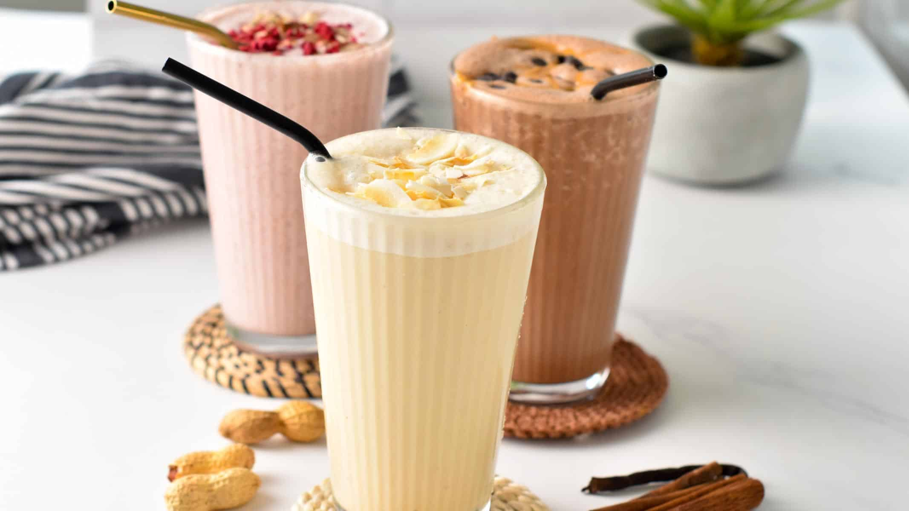

Protein Shake

Description
Protein shakes (or protein smoothies) are a protein drink typically
consumed before or after a workout in order to aid in muscle recovery.
Protein shakes are usually made with frozen fruit/ice, a protein source
such as protein powder, and a liquid.
Ingredients
- Protein powder
- Nuts/Nut butter
- Seeds
- Fruit/Veggies
- Other protein sources
Steps
-
Base - Fruit vs. Ice: Start with a base of around 1 cup
of ice or 1 cup of frozen fruit. My favorite base is frozen banana, but
mixed berries are a close second. Add it right into your high-speed
blender.
-
Protein: Next, choose your protein source(s). We
typically use multiple protein sources when making a protein shake. For
example, you could do a serving of protein powder + a teaspoon of
chia/flax seed + a tablespoon of nut butter.
-
Sweetener: Now, decide if you'd like to add a
sweetener. Depending on how sweet your protein powder is or what base
fruit you used, you may not need to add one! If you are going to add
one, we suggest an all-natural sweetener such as maple syrup or honey.
-
Liquid: Start with about 1/3 cup to 1/2 cup of liquid
and add more from there. There's nothing worse than a protein shake
that's too runny, so start conservatively. Feel free to use any liquid
you like such as water, orange juice, almond milk, etc.
-
Blend: Now it's time to blend it all up! The better the
blender, the smoother your protein shake is going to be! If things are
having a hard time “smoothing,” this means you need to add more liquid.
-
ENJOY YOUR PROTEIN SHAKE!